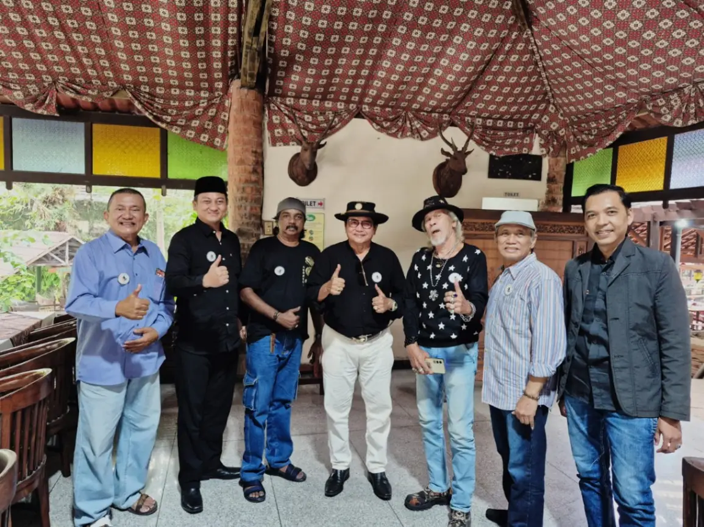

KOLEKSI BERITA · PARFI JAWA TIMUR
Kabar yang patut diikuti.
Kumpulan berita yang memuat aktivitas dan isu terkait PARFI Jawa Timur. Klik kartu mana pun untuk membaca artikel pada sumber aslinya.

KEGIATAN PARFI · 3 SEP 2026
PC PARFI Kediri Gandeng PARFI Jatim Gelar Workshop Acting.
Workshop Acting 13–15 November 2026 menghadirkan Susilo Badar untuk memperkuat kesiapan talenta lokal di industri film.
Sumber: File News
Baca selengkapnya ↗
KEGIATAN PARFI · 2 NOV 2025
Bagikan Makanan Berbungkus Daun Pisang, Tim Dapur Umum Mbok Dar Mortir Semarakkan Parade Surabaya Juang.
PARFI ikut ambil bagian dalam Parade Surabaya Juang di Tugu Pahlawan Surabaya.
Sumber: Wira Fokus
Baca selengkapnya ↗ORGANISASI & EKRAF · JUN 2026
PARFI Jatim perkuat organisasi dan ekonomi kreatif film.
Penguatan pengurus, digitalisasi anggota, dan pengembangan industri kreatif menjadi arah kerja organisasi.
Sumber: Mili.id
Baca selengkapnya ↗
SILATURAHMI · 21 JUN 2026
Film berbasis kearifan lokal: mengangkat sejarah setiap daerah.
Pengurus daerah dan PC PARFI berkumpul untuk menyatukan visi serta membahas potensi cerita lokal.
Sumber: Bangsa Online
Baca selengkapnya ↗EKOSISTEM FILM · 25 MEI 2026
PARFI Jatim dukung usulan 1.000 bioskop desa.
Akses tayang yang merata dapat membuka ruang distribusi untuk karya sineas daerah.
Sumber: Jatim Update
Baca selengkapnya ↗Setiap berita mengarahkan langsung ke situs media sumber. Koleksi akan diperbarui saat berita resmi baru ditambahkan.